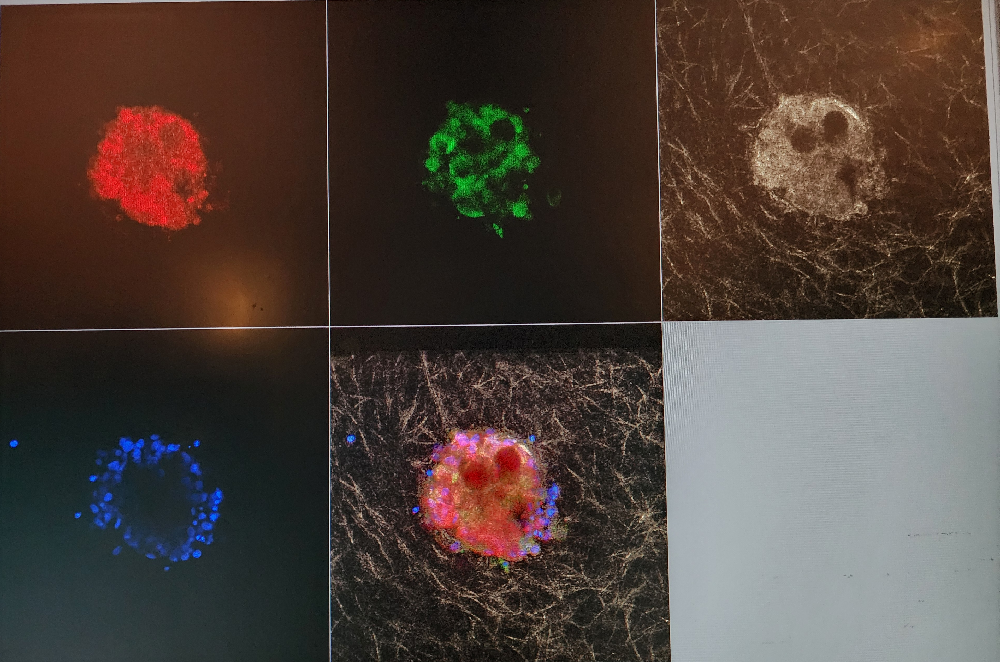
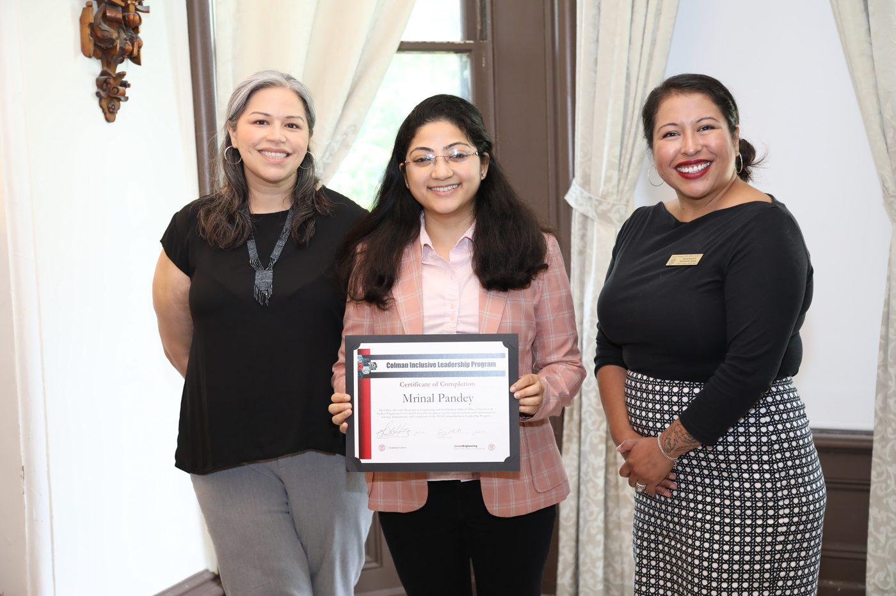
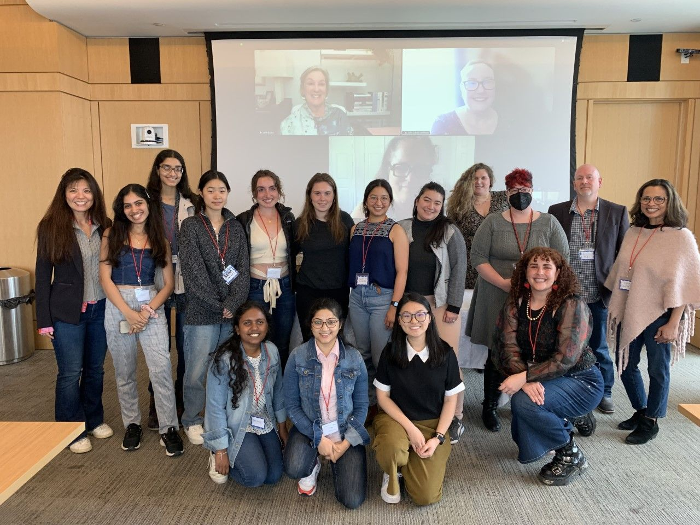
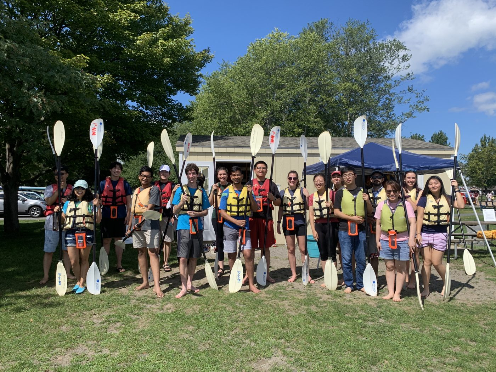

Biocule, Research Liaison (part-time)
Sept 2026 – Present
- Review oncology clinical trial and drug discovery literature.
- Build slide decks that communicate scientific findings to non-scientific stakeholders.
Scientist - Innovator - Collaborator
Hi, I’m Mrinal Pandey, a biological engineer with a PhD from Cornell University. My research uses 3D tumor spheroid models, microfluidic platforms, and transcriptomics to study how mechanical forces impact tumor progression and invasion, including how compression suppresses STAT1/IFN signaling in breast tumor spheroids.
Next, I want to work closer to translation using organ-on-chip and microphysiological systems (MPS) that recreate the patient's tumor microenvironment, including complex tissue and tumor-immune cell interactions. As a next step in my career I want to work towards science that's closer to precision oncology and pateint care. Alongside research, I am a reviewr for scientific jounrls and I also review oncology clinical trial and drug discovery literature for non-scientific audiences, and I hold Good Clinical Practice (GCP) and Medical Science Liaison (MSL) certifications. Based in Ontario, Canada.
An illustration of tumor-embedded collagen being compressed, not experimental data.
Tumors grow in tight spaces and get squeezed by the tissue around them. During my PhD I developed in vitro models that could mimic these stresses to 3D breast tumor spheroids embedded in collagen. Then I studies the tumor reponse at different time scales.
Drag the slider to apply compression.
Sept 2026 – Present
Feb 2026 – Aug 2026 · Ithaca, NY
Jan 2020 – Dec 2025 · Ithaca, NY
Sept 2018 – Oct 2019 · Stockholm, Sweden
Jun 2018 – Aug 2018 · Providence, RI
Oct 2014 – Jun 2017 · India
Jan 2020 – Dec 2025 · Ithaca, NY
Member of Alpha Epsilon Biological Engineering Honor Society.
Aug 2017 – Oct 2019 · Stockholm, Sweden
Aug 2010 – Jun 2014 · India


Cornell University, 2024
Certified program focused on belonging, emotional intelligence, and cultural awareness in leadership. Trained in conflict management and inclusive team leadership.

Cornell University, 2023
Selective, certified program for women leaders in engineering and technical disciplines. Trained in strategic decision-making, negotiation, and leading complex technical teams.
KTH Royal Institute of Technology, 2017 – 2019
Represented the KTH Medical Biotechnology program internationally and mentored prospective students on academics, research, and life in Sweden.
Full list on Google Scholar.
Science is a big part of my life, but not the only part. Here are a few things that keep me energized outside the lab.
Exploring trails and mountains. Recharging in nature is where I get my best ideas.

Always up for some outdoor fun.
I’m always happy to talk about organ-on-chip models, tumor-immune biology, and translational oncology, or to explore collaborations.